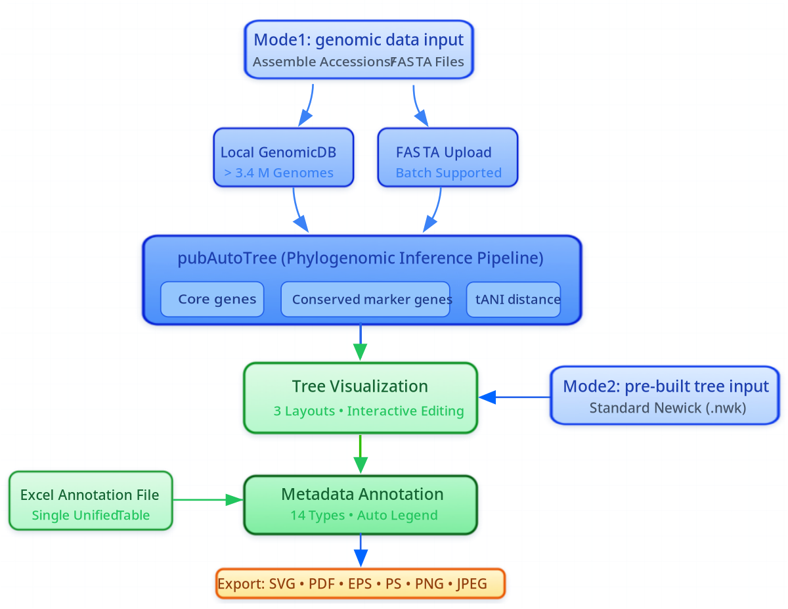

pubAutoTree
Start with NCBI assembly accessions or FASTA genomes. Run automated phylogenomic analyses with supported quality-control and inference options.
Run automated inference ↗pubTreeServer unites automated tree inference with interactive visualization, Excel-based annotations and high-quality figure export — without fragmenting your genome-to-figure workflow.
Core capabilities
Use the automatic genome-based workflow, or upload an existing Newick tree directly into TreeVisualizer.
Start with NCBI assembly accessions or FASTA genomes. Run automated phylogenomic analyses with supported quality-control and inference options.
Run automated inference ↗Explore rectangular, circular and unrooted layouts; edit nodes, branches and text, and fine-tune the visual presentation interactively.
Open TreeVisualizer ↗Import a single annotation table, combine 14 supported annotation types and configure global styles or individual columns.
Explore annotation settings ↗Unified workflow
Provide NCBI assembly accessions or upload FASTA genome assemblies. pubAutoTree infers a phylogenetic tree and passes it to the visualization interface.
Start with genomes ↗Upload a pre-built `.nwk` phylogeny to immediately begin editing, annotation, layout customization and figure export.
Start with a Newick tree ↗
14 annotation types
Bring categorical, numeric, clade-level, node-level and branch-level metadata together without switching between separate annotation files.
Read the annotation guide ↗Explore real examples
View examples and download their test data directly below. Examples 01–04 provide NWK files; Examples 05–10 provide both NWK and Excel files.
Local deployment
Download the compiled frontend/backend distribution, then follow the official instructions for Java, Redis, Node.js and workflow-dependent bioinformatics tools.